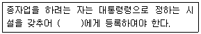
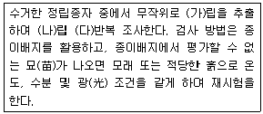
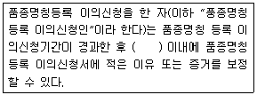
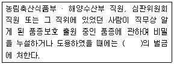
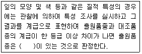

종자기사 (2017-03-05 기출문제)
1과목: 종자생산학
1. 물의 투과성 저해로 인하여 종자가 휴면하는 것은?
- 나팔꽃
- 미나리아재비과 식물
- 보리
- 사과나무
(정답률: 73%)

2. 저온과 장일 조건에 감응하여 꽃눈이 분화, 발달되는 채소는?
- 배추
- 오이
- 토마토
- 고추
(정답률: 64%)
3. 감자 포장검사 시 검사 기준으로 옳지 않은 것은?
- 1차 검사는 유묘가 15cm 정도 자랐을 때 실시한다.
- 채종포는 비채종 포장으로부터 5m 이상 격리되어야 한다.
- 연작 피해 방지 대책을 강구한 경우에는 연작할 수 있다.
- 걀쭉병 발생포장은 2년간 감자를 재배하여서는 안 된다.
(정답률: 58%)
4. 광과 종자 발아에 대한 설명으로 옳지 않은 것은?
- 광은 종자 발아와 아무런 관계가 없는 경우도 있다.
- 종자 발아가 억제되는 광 파장은 700~750nm 정도이다.
- 종자 발아의 광가역성에 관여하는 물질은 cytochrome이다.
- 광이 없어야 발아가 촉진되는 종자도 있다.
(정답률: 74%)
5. 종자에 의하여 전염되기 쉬운 병해는?
- 흰가루병
- 모잘록병
- 배꼽썩음병
- 잿빛곰팡이병
(정답률: 67%)
6. 다음 작물 중에서 종자의 수명이 짧은 단명종자에 속하는 것은?
- 상추
- 토마토
- 수박
- 가지
(정답률: 77%)
7. 채종지 선정 시 고려해야 할 사항으로 옳지 않은 것은?
- 일장은 꽃눈형성 및 추대에 매우 중요한 요소이다.
- 개화기부터 등숙기까지는 습한 곳이 적당하다.
- 도시 근교보다는 도시에서 떨어진 지역이 적합하다.
- 배수가 양호한 토양으로 병해충의 발생밀도가 낮아야 한다.
(정답률: 88%)
8. 종자검사 방법에 대한 설명으로 옳지 않은 것은?
- 발아검사 시 순도검사를 마친 정립종자를 무작위로 최소한 300립을 추출하여 100립씩 3반복으로 치상한다.
- 발아검사에서의 발아시험결과는 정상묘 숫자를 비율로 표시하며, 비율은 정수로 한다.
- 수분검사용 제출시료의 최소량은 분쇄해야 하는 종자는 100g, 그 밖의 것은 50g이다.
- 수분측정 시 반복 간의 수분함량의 차가 0.2%를 넘지 않으면 반복측정의 산술평균 결과로 하고, 넘으면 반복측정을 다시 한다.
(정답률: 80%)
9. 산형화서의 형상으로 종자가 발달하는 작물이 아닌 것은?
- 파
- 보리
- 양파
- 부추
(정답률: 73%)
10. 포장검사에서 품종순도를 산출할 때에 직접 조사하지 않는 것은?
- 이병주
- 이종종자주
- 이품종
- 이형주
(정답률: 59%)
11. 고구마의 개화 유도 및 촉진 방법이 아닌 것은?
- 12~14시간의 장일처리를 한다.
- 나팔꽃의 대목에 고구마 순을 접목한다.
- 고구마 덩굴의 기부에 절상을 낸다.
- 고구마 덩굴의 기부에 환상박피를 한다.
(정답률: 70%)
12. 다음 중 혐광성 종자는?
- 상추
- 우엉
- 차조기
- 무
(정답률: 55%)
13. 채종재배의 기본 원칙 중 가장 중요한 것은?
- 목표 종자량 확보
- 생력재배
- 품종 개량
- 종자 순도와 활력 유지
(정답률: 75%)
14. 우리나라 주요 농작물의 종자 증식을 위한 기본 체계는?
- 기본식물 → 원원종 → 원종 → 보급종
- 기본식물 → 원종 → 원원종 → 보급종
- 보급종 → 기본식물 → 원원종 → 원종
- 보급종 → 기본식물 → 원종 → 원원종
(정답률: 90%)
15. 해외 채종의 유리한 점이라 볼 수 없는 것은?
- 저렴한 인건비
- 유리한 기상 조건
- 수확 종자에 생태적응성 부여
- 저렴한 지가 및 면적 확보 용이
(정답률: 79%)
16. 다음 중 시금치의 화성(花成) 유기에 가장 알맞은 환경 조건은?
- 저온 단일
- 저온 장일
- 고온 단일
- 고온 장일
(정답률: 60%)
17. 오이에 있어서 수꽃을 유기하기 위한 방법은?
- 저온 육묘
- 단일 육묘
- 에스렐 처리
- 질산은(AgNO3) 처리
(정답률: 64%)
18. 종자 발아 과정을 설명한 것으로 옳지 않은 것은?
- 종자의 수분 흡수 과정을 3단계로 나눌 수 있으며, 뿌리의 신장은 3단계에서 관찰된다.
- 쌍자엽식물인 경우 배에서 생성된 지베렐린은 호분층으로 이동한다.
- 발아 시 지방산의 산화작용은 주로 β-산화작용에 의하여 이루어진다.
- 물의 흡수는 제종피가 비교적 얇은 주공 근처에서 가장 잘된다.
(정답률: 62%)
19. 웅성불임을 이용한 수수의 F1은 3계교잡으로 채종하는데 이에 관여하는 계통을 모두 옳게 나열한 것은?
- 웅성불임계통 2개, 웅성불임계통의 유지계통 1개
- 웅성불임계통 1개, 임성회복인자를 갖는 자식계통 2개
- 웅성불임계통 1개, 웅성불임계통의 유지계통 1개, 임성회복인자를 갖는 자식계통 1개
- 웅성불임계통 2개, 임성회복인자를 갖는 자식계통 1개
(정답률: 82%)
20. 종자의 발아능 검사를 위한 tetrazolium 검사시 처리농도(%) 범위로 가장 적합한 것은?
- 0.1 ~ 1.0
- 1.0 ~ 2.0
- 2.0 ~ 3.0
- 3.0 ~ 4.0
(정답률: 81%)
2과목: 식물육종학
21. 순계분리 육종에 관한 설명으로 옳지 않은 것은?
- 순계집단 내에서 선발한다.
- 순계들의 혼형집단에서 선발한다.
- 차대 검정을 해야 한다.
- 육종연한이 비교적 짧다.
(정답률: 40%)
22. 집단선발육종법이 가장 보편적으로 이용되는 것은?
- 자가수정 작물 육종
- 모든 작물의 교배육종
- 타가수정 작물 육종
- 영양번식 작물 개량
(정답률: 61%)
23. 인위적인 교잡에 의해서 양친이 가지고 있는 유전적인 장점만을 취하여 육종하는 것은?
- 조합육종
- 반수체육종
- 초월육종
- 도입육종
(정답률: 74%)
24. 복2배체의 작성 방법은?
- 게놈이 같은 양친을 교잡한 의 염색체를 배가하여 작성한다.
- 게놈이 서로 다른 양친을 교잡한 의 염색체를 배가하여 작성한다.
- 2배체에 콜히친을 처리하여 4배체로 한 다음 여기에 3배체를 교잡하여 작성한다.
- 3배체와 2배체를 교잡하여 만든다.
(정답률: 68%)
25. 잡종강세를 이용하는 데 구비해야 할 조건으로 옳지 않은 것은?
- 한 번의 교잡으로 많은 종자를 생산할 수 있어야 한다.
- 교잡 조작이 쉬워야 한다.
- 단위 면적당 재배에 요구되는 종자량이 많아야 한다.
- 종자를 생산하는 데 필요한 노임을 보상하고도 남음이 있어야 한다.
(정답률: 84%)
26. 요한센(Johannsen)의 순계설에 관한 설명으로 틀린 것은?
- 동일한 유전자형으로 구성된 집단을 순계라 한다.
- 순계 내에서의 선발은 효과가 없다.
- 육종적 입장에서 선발은 유전변이가 포함되어 있는 경우에만 유효하다.
- 순계설은 교잡육종법의 이론적 근거가 된다.
(정답률: 55%)
27. 화곡류 작물의 채종재배 시 수확 적기는?
- 유숙기
- 황숙기
- 갈숙기
- 고숙기
(정답률: 87%)
28. 감수분열(생식세포분열)의 특징을 옳게 설명한 것은?
- 하나의 화분모세포는 연속적으로 분열하여 많은 수의 소포자를 형성한다.
- 하나의 배낭모세포는 1회 분열하여 2개의 배낭을 형성한다.
- 하나의 화분모세포는 2회 분열하여 4개의 화분립을 형성한다.
- 하나의 배낭모세포는 3회 연속 분열하여 8개의 대포자를 형성한다.
(정답률: 73%)
29. 다음 중 선발의 효과가 가장 크게 기대되는 경우는?
- 유전변이가 작고, 환경변이가 클 때
- 유전변이가 크고, 환경변이가 작을 때
- 유전변이가 크고, 환경변이도 클 때
- 유전변이가 작고, 환경변이도 작을 때
(정답률: 79%)
30. PCR(Polymerase chain reaction) 1 cycle의 순서가 옳은 것은?
- 중합반응 → 프라이머 결합 → DNA변성
- DNA변성 → 중합반응 → 프라이머 결합
- 프라이머 결합 → DNA변성 → 중합반응
- DNA 변성 → 프라이머 결합 → 중합반응
(정답률: 65%)
31. 다음 중 염색체의 부분적 이상이 아닌 것은?
- 결실
- 중복
- 전좌
- 배수
(정답률: 74%)
32. cDNA에 대한 설명이 옳은 것은?
- DNA 중합효소를 처리하여 RNA를 상보적 DNA로 합성한 것
- 역전사효소를 처리하여 mRNA를 상보적 DNA로 합성한 것
- RNA 중합효소를 처리하여 DNA를 상보적 DNA로 합성한 것
- 역전사 효소를 처리하여 DNA를 상보적 mRNA로 합성한 것
(정답률: 63%)
33. 회피성과 내성에 관한 설명이 옳은 것은?
- 회피성은 스트레스 후 저항성, 내성은 스트레스 전 저항성이다.
- 내동성(耐凍性)은 회피성, 내한성(耐旱性)은 내성이다.
- 내성과 회피성은 포장에서 뚜렷하게 구분된다.
- 좁은 의미의 스트레스 저항성은 내성이다.
(정답률: 64%)
34. 품종의 생리적 퇴화의 원인이 되는 것은?
- 돌연변이
- 자연교잡
- 토양적인 퇴화
- 이형 유전자형의 분리
(정답률: 54%)
35. 다음 중 양적형질에 관여하는 유전자는?
- 치사유전자
- 중복유전자
- 억제유전자
- 복수유전자
(정답률: 52%)
36. 영양번식 작물의 교배육종 시 선발은 어느 때 하는 것이 가장 좋은가?
- 교배종자
- F1 세대
- F4
- F7 이후 고정세대
(정답률: 72%)
37. 외국에서 새로 도입하는 식물 및 종자에 감염된 병균과 해충의 침입을 방지하기 위한 것은?
- 고랭지 채종
- 품종등록
- 종자증식
- 식물검역
(정답률: 85%)
38. 표현형 분산(VP) 100, 유전자의 상가적 효과에 의한 분산(VD) 50, 유전자의 우성효과에 의한 분산(VH) 10, 환경변이에 의한 분산(VE) 40인 경우 넓은 뜻의 유전력은?
- 30%
- 40%
- 50%
- 60%
(정답률: 58%)
39. 몇 개의 검정품종(계통)에 새로 육성한 계통을 교잡시켜 얻은 F1의 생산력에 근거하여 일반 조합능력을 검정하는 방법은?
- 톱교잡 검정법
- 다교잡 검정법
- 단교잡 검정법
- 이면교잡 검정법
(정답률: 77%)
40. 연속적으로 자가수정한 자식성 집단의 유전적 특성은?
- 동형접합체가 많다.
- 이형접합체가 많다.
- 돌연변이체가 많다.
- 배수체가 많다.
(정답률: 83%)
3과목: 재배원론
41. 식물체에서 기관의 탈락을 촉진하는 식물생장조절제는?
- 옥신
- 지베렐린
- 시토키닌
- ABA
(정답률: 72%)
42. 고무나무와 같은 관상수목을 높은 곳에서 발근시켜 취목하는 영양번식 방법은?
- 분주
- 고취법
- 삽목
- 성토법
(정답률: 84%)
43. 벼의 비료 3요소 흡수 비율로 옳은 것은?
- 질소 5 : 인산 1 : 칼륨 1.5
- 질소 5 : 인산 2 : 칼륨 4
- 질소 4 : 인산 2 : 칼륨 3
- 질소 3 : 인산 1 : 칼륨 4
(정답률: 57%)
44. 종자를 치상 후 일정 기간까지의 발아율을 무엇이라 하는가?
- 발아세
- 발아시
- 발아전
- 발아기
(정답률: 85%)
45. 염류 집적의 피해 대책으로 틀린 것은?
- 객토
- 심경
- 피복재배
- 담수처리
(정답률: 61%)
46. 수비(이삭거름)는 벼의 일생 중 어느 생육단계에 시용하는가?
- 유수분화기
- 유수형성기
- 감수분열기
- 수전기
(정답률: 65%)
47. 잡초의 해로운 작용이 아닌 것은?
- 유해물질의 분비
- 병충해의 전파
- 품질의 저하
- 작물과 공생
(정답률: 83%)
48. 도복에 대한 설명으로 틀린 것은?
- 화곡류에서 도복에 가장 약한 시기는 최고분얼기이다.
- 병해충이 많이 발생할 경우 도복이 심해진다.
- 도복에 의하여 광합성이 감퇴되고 수량이 감소한다.
- 도복에 대한 저항성의 정도는 품종에 따라 차이가 있다.
(정답률: 74%)
49. 광합성에서 C4작물에 속하지 않는 것은?
- 옥수수
- 수수
- 사탕수수
- 벼
(정답률: 79%)
50. 유전자 발현을 조절하고 기공의 열림을 촉진하는 광파장은?
- 적색광
- 청색광
- 녹색광
- 자외선
(정답률: 54%)
51. 내건성이 강한 작물이 갖고 있는 형태적 특성은?
- 잎의 해면조직 발달
- 잎의 기동세포 발달
- 잎의 기공이 크고 수가 적음
- 표면적/체적의 비율이 큼
(정답률: 52%)
52. 에틸렌의 주요 생리 작용이 아닌 것은?
- 성숙 촉진
- 낙엽 촉진
- 생장 억제
- 개화억제
(정답률: 50%)
53. 탄산시비의 효과가 아닌 것은?
- 수량증대
- 품질향상
- 착과율 감소
- 모 소질 향상
(정답률: 76%)
54. 채소류의 육묘 방법 중에서 공정육묘의 이점이 아닌 것은?
- 모의 대량생산
- 기계화에 의한 생산비 절감
- 단위면적당 이용률 저하
- 모 소질 개선 가능
(정답률: 80%)
55. 논토양의 특징으로 틀린 것은?
- 탈질 작용이 일어난다.
- 산화환원전위가 낮다.
- 환원물(N2,H2S)이 존재한다.
- 토양색은 황갈색이나 적갈색을 띤다.
(정답률: 58%)
56. 벼 병해형 냉해의 증상으로 틀린 것은?
- 화분의 수정 장해
- 규산 흡수의 저해
- 광합성의 감퇴
- 단백질 합성의 저하
(정답률: 46%)
57. 토성을 분류하는데 기준이 될 수 없는 것은?
- 자갈
- 모래
- 미사
- 점토
(정답률: 69%)
58. 다음 중 파종 전 처리로 사용되는 제초제는?
- paraquat
- 2,4,-D
- alachlor
- simazine
(정답률: 53%)
59. 논토양에서 유기태 질소의 무기화가 촉진되기 위한 방법으로 틀린 것은?
- 토양 건조 후 가수(加水)
- 담수
- 지온 상승
- 수산화칼슘 처리
(정답률: 40%)
60. 모관수의 토양 수분 함량은?
- pF 0~2.7
- pF 2.7~4.5
- pF 4.5~7
- pF 7이상
(정답률: 67%)
4과목: 식물보호학
61. 고형시용제 중 농약 살포 도중에 비산이 적다는 의미를 갖는 제형은?
- 분제
- FD제
- 수화제
- DL분제
(정답률: 68%)
62. 광엽잡초에 해당하는 것은?
- 피
- 쇠뜨기
- 뚝새풀
- 왕바랭이
(정답률: 60%)
63. 농약제형 중 유제(乳劑)의 영문 표기는?
- OS(oil solution)
- SP(soluble powder)
- WP(wettable powder)
- EC(emulsifiable concentrate)
(정답률: 58%)
64. 벼의 병해 중에서 병원균이 세균인 것은?
- 오갈병
- 흰잎마름병
- 깨씨무늬병
- 잎집무늬마름병
(정답률: 51%)
65. 광발아성 잡초에 해당하는 것은?
- 냉이
- 별꽃
- 바랭이
- 광대나물
(정답률: 66%)
66. 대추나무 빗자루병에서 볼 수 있는 대표적인 병징은?
- 총생
- 무름
- 괴사
- 모자이크
(정답률: 59%)
67. 곤충이 피부를 구성하는 부분이 아닌 것은?
- 융기
- 큐티클
- 기저막
- 표피세포
(정답률: 75%)
68. 살비제의 구비 조건이 아닌 것은?
- 잔효력이 있을 것
- 적용 범위가 넓을 것
- 약제 저항성의 발달이 지연되거나 안 될 것
- 성충과 유충(약충)에 대해서만 효과가 있을 것
(정답률: 72%)
69. 해곤충의 소화기관 중 대부분의 소화효소가 분비되며 분해된 음식물이 흡수되는 곳은?
- 중장
- 침샘
- 전장
- 후장
(정답률: 76%)
70. 감자 바이러스병 진단에 사용되는 방법으로 미리 싹을 틔워 병징을 발현시켜 발병 유무를 진단하는 법은?
- 괴경지표법
- 혐촉반응법
- 지표식물법
- 병징 음폐제거법
(정답률: 84%)
71. 해충 방제 방법 분류 중 성격이 다른 것은?
- 윤작
- 혼작
- 온도처리
- 포장위생
(정답률: 73%)
72. 식물체의 표피세포에서만 생장하는 외부기생균에 해당하는 것은?
- 벼 도열병균
- 사과 탄저병균
- 보리 흰가루병균
- 보리 겉깜부기병균
(정답률: 50%)
73. 우리나라 논의 주요 잡초 중 방동사니과에 속하는 다년생 잡초는?
- 강피
- 올미
- 올방개
- 뚝새풀
(정답률: 73%)
74. 애멸구가 매개하는 벼의 병은?
- 도열병, 흰잎마름병
- 도열병, 검은줄오갈병
- 빗자루병, 줄무늬잎마름병
- 검은줄오갈병, 줄무늬잎마름병
(정답률: 66%)
75. 복숭아심식나방에 대한 설명으로 옳지 않은 것은?
- 일반적으로 연 2회 발생한다.
- 유충으로 나무껍질 속에서 겨울을 보낸다.
- 부화유충은 과실 내부에 침입하여 식해한다.
- 방제를 위해 과실에 봉지를 씌우면 효과적이다.
(정답률: 61%)
76. 화학적 잡초방제법에 속하는 것은?
- 피복처리
- 약제 방제
- 비산 종자의 관리
- 식물 병원균의 이용
(정답률: 87%)
77. 0.1%의 2,4-D 농도는 몇 ppm이 되는가?
- 10ppm
- 100ppm
- 1000ppm
- 10000ppm
(정답률: 60%)
78. 잡초의 생태적 방제법 중 작물의 경합력 증진을 위한 경합특성이용법에 해당하지 않는 것은?
- 윤작
- 경운
- 재식밀도 조절
- 피복작물 재배
(정답률: 63%)
79. 오존에 의해 피해를 입은 식물체에 나타나는 증상이 아닌 것은?
- 암종
- 황화
- 반점
- 얼룩
(정답률: 66%)
80. 병이 반복하여 발생하는 과정 중 잠복기에 해당하는 기간은?
- 침입한 병원균이 기주에 감염되는 기간
- 전염원에서 병원균이 기주에 침입하는 기간
- 병징이 나타나고 병원균이 생활하다 죽는 기간
- 기주에 감염된 병원균이 병징이 나타나게 할 때까지의 기간
(정답률: 86%)
5과목: 종자관련법규
81. 종자검사요령상 수분의 측정에서 저온항온 건조기법을 사용하게 되는 종은?
- 당근
- 상추
- 오이
- 땅콩
(정답률: 46%)
82. 종자관련법상 보증서를 거짓으로 발급한 종자관리사가 받는 벌칙은?
- 6개월 이하의 징역 또는 1천만원 이하의 벌금에 처한다.
- 1년 이하의 징역 또는 1천만원 이하의 벌금에 처한다.
- 2년 이하의 징역 또는 3천만원 이하의 벌금에 처한다.
- 3년 이하의 징역 또는 7천만원 이하의 벌금에 처한다.
(정답률: 79%)
83. 종자의 유통 관리에서 종자업의 등록에 대한 내용이다. ( )에 해당하지 않는 것은?

- 농업기술센터장
- 시장
- 군수
- 구청장
(정답률: 73%)
84. 대통령령으로 정하는 작물의 종자를 생산, 판매 하려는 자의 경우를 제외하고, 종자업을 하려는 자는 종자관리사를 며 명 이상 두어야 하는가?
- 1명
- 3명
- 5명
- 7명
(정답률: 88%)
85. 정립에 해당하지 않는 것은?
- 미숙립
- 원형의 반 미만의 작물종자 쇄립
- 발아립
- 주름진립
(정답률: 80%)
86. 종자의 보증과 관련된 검사서류를 보관하지 아니한 자가 받는 과태료는?
- 3백만원 이하의 과태료
- 6백만원 이하의 과태료
- 1천만원 이하의 과태료
- 2천만원 이하의 과태료
(정답률: 73%)
87. 종자관련법상 묘목의 보증표시 방법으로 옳은 것은?
- 바탕색은 흰색으로, 대각선은 보라색으로, 글씨는 검은색으로 표시한다.
- 바탕색은 파란색으로, 글씨는 검은색으로 표시한다.
- 바탕색은 붉은 색으로, 글씨는 검은색으로 표시한다.
- 바탕색은 보라색으로, 글씨는 검은색으로 표시한다.
(정답률: 68%)
88. 종자관리사에 대한 행정처분의 세부 기준에서 행정 처분이 업무정지 1년에 해당하는 것은?(관련 규정 개정전 문제로 여기서는 기존 정답인 4번을 누르면 정답 처리됩니다. 자세한 내용은 해설을 참고하세요.)
- 종자보증과 관련하여 형을 선고받은 경우
- 종자관리사 자격과 관련하여 최근 2년간 이중취업을 2회 이상 한 경우
- 업무정지처분기간 종료 후 3년 이내에 업무 정지처분에 해당하는 행위를 한 경우
- 종자보증과 관련하여 고의 또는 중대한 과실로 타인에게 막대한 손해를 입힌 경우.
(정답률: 71%)
89. 품질검사의 기준 및 방법에서 발아율에 대한 내용이다. (가), (나), (다)에 알맞은 내용은?

- 가 : 100, 나 : 80, 다 : 4
- 가 : 200, 나 : 100, 다 : 4
- 가 : 400, 나 : 100, 다 : 4
- 가 : 500, 나 : 100, 다 : 4
(정답률: 83%)
90. 품종명칭등록 이의 신청 이유 등의 보정에 대한 설명 중 ( )에 알맞은 것은?

- 5일
- 10일
- 30일
- 60일
(정답률: 87%)
91. 품종보호권, 전용실시권 또는 질권의 상속이나 그 밖의 일반승계의 취지를 신고하지 아니한 자에게 부과되는 과태료는 얼마인가?
- 10만원 이하
- 30만원 이하
- 50만원 이하
- 100만원 이하
(정답률: 70%)
92. 씨혹(caruncle)을 설명한 것은?
- 통상 무병화(sessile)가 밀집한 화서
- 꽃받침조각으로 이루어진 꽃의 바깥쪽 덮개
- 주공(珠孔 icropylar)부분의 조그마한 돌기
- 꽃 또는 볏과식물의 소수(spikelet)를 엽맥에 끼우는 퇴화한 잎 또는 인편상의 구조물
(정답률: 77%)
93. 종자업 등록을 한 날부터 1년 이내에 사업을 시작하지 아니하거나 정당한 사유없이 1년 이상 계속하여 휴업한 경우에 받는 행정 처분은?
- 종자업 등록 취소 또는 6개월 이내의 영업의 전부 또는 일부의 정지
- 종자업 등록 취소 또는 9개월 이내의 영업의 전부 또는 일부의 정지
- 종자업 등록 취소 또는 12개월 이내의 영업의 전부 또는 일부의 정지
- 종자업 등록 취소 또는 3년 이내의 영업의 전부 또는 일부의 정지
(정답률: 76%)
94. 비밀누설죄 등에 관한 설명 중 ( )에 알맞은 것은?

- 1년 이하의 징역 또는 3천만원 이하
- 3년 이하의 징역 또는 3천만원 이하
- 3년 이하의 징역 또는 5천만원 이하
- 5년 이하의 징역 또는 5천만원 이하
(정답률: 65%)
95. 전문인력 양성 기관의 지정취소 및 업무정지의 기준에서 전문인력 양성기관의 지정 기준에 적합하지 않게 된 경우, 2회 위반시 처분은?
- 업무정지 3개월
- 업무정지 6개월
- 업무정재 12개월
- 시정명령
(정답률: 38%)
96. 품종보호요건을 갖춘 품종은 품종보호를 받을 수 있는데, 이에 해당하지 않는 것은?
- 신규성
- 구별성
- 균일성
- 특별성
(정답률: 84%)
97. 품종보호를 받지 아니하거나 품종보호 출원 중이 아닌 품종의 종자가 용기나 포장에 품종보호를 받았다는 표시 또는 품종보호 출원 중이라는 표시를 하거나 이와 혼동하기 쉬운 표시를 하는 행위를 한 자가 받는 벌칙은?
- 3년 이하의 징역 또는 2천만원 이하의 벌금에 처한다.
- 2년 이하의 징역 또는 2천만원 이하의 벌금에 처한다.
- 1년 이하의 징역 또는 1천만원 이하의 벌금에 처한다.
- 1년 이하의 징역 또는 5백만원 이하의 벌금에 처한다.
(정답률: 37%)
98. 종자업자에 대한 행정처분의 세부 기준에서 거짓이나 그 밖의 부정한 방법으로 종자업 등록을 한 경우, 1회 위반 시 행정처분은?
- 영업정지 7일
- 영업정지 15일
- 영업정지 30일
- 등록취소
(정답률: 76%)
99. 품종보호권 또는 전용실시권을 침해한 자에게 부과되는 벌금은 얼마인가?
- 5천만원 이하
- 7천만원 이하
- 9천만원 이하
- 1억원 이하
(정답률: 79%)
100. 재배 심사의 판정기준에 대한 내용 중 ( )에 알맞은 것은?

- 신규성
- 영속성
- 구별성
- 우수성
(정답률: 75%)